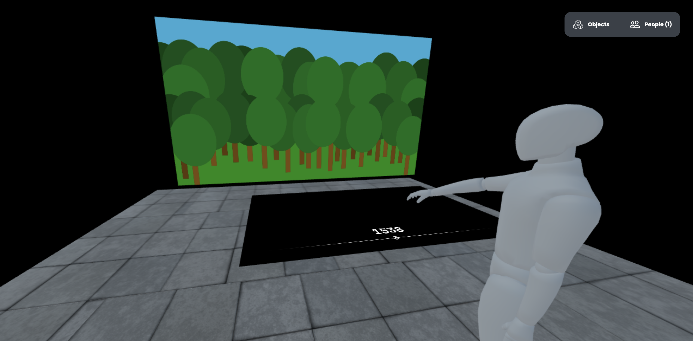

C E N T R E
C É R A M I Q U E
M E R E L
H O U B E N
graphic designer


Bij de ingang hebben we ervoor gekozen om een beamerprojectie neer te zetten. Dit zodat de bezoeker getriggerd wordt om verder naar boven te lopen en daar de erfgoedcollectie te bekijken.
De verdere tentoonstelling hebben we gevisualiseerd door middel van VR. Door deze eerste omgeving willen we laten zien dat bezoekers de collectie op een heel andere manier kunnen bekijken dan van achter glas. We hebben ervoor willen zorgen dat de bezoeker om de gehele collectie heen kan lopen en zo zelf op onderzoek uit gaat.
De volgende omgeving hebben we gemaakt om de geschiedenis van Maastricht terug te laten komen. Het is natuurlijk wel een erfgoedcollectie uit Maastrichtse fabrieken. De bedoeling hiervan is dat de bezoekers in een donkere ruimte staan en door middel van een tijdlijn de geschiedenis van Maastricht voor zich krijgt uitgebeeld. Zo gaat de bezoeker terug in de tijd.
De informatie tablets die bij de vitrines hingen konden wel wat vernieuwing gebruiken. Wij zijn hiermee aan de slag gegaan en hebben een hele nieuwe interface gemaakt. Spelenderwijs leert de bezoeker de erfgoedcolletie die in de vitrine staat kennen.
Aan het einde van de expositie krijgt de bezoeker een kaartje mee naar huis. Hierop staan oude straten van Maastricht die onderdeel zijn van de geschiedenis van Maastricht. Op de andere kant staat een route vanaf Centre Céramique langs allemaal belangrijke punten in Maastricht. Zo kan de bezoeker de kennis die is opgedaan ook buiten verder trekken.